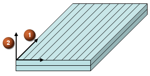

Stacking recipe
Specifies a predefined stacking sequence.
For an inflated laminate, the stacking recipe is automatically set to Extruded.
Ply and stack directions
Specify the direction of the 0° angle for the fibers (1) and the direction in which the plies are stacked from bottom to top (2) for the Solid Laminate physical property, with respect to material orientation.

Reference temperature
Is used to compute temperature-dependent material properties for laminate validation. It is also exported to the NASTRAN PCOMP, PCOMPG, PCOMPS, and PSHELL cards.
Ply failure theories
Are used to compute ply failure indices, strength ratios, and margins of safety when:
You validate laminate strength.
You post process laminate results using the Advanced Post Report command.
Interlaminar failure
Controls how the stress allowables of the interlaminar bond are defined to compute the interlaminar failure results.
When you select Use Material Allowables, NX Laminate Composites uses the material allowables of the ply that is below the bond.
When you select Use Laminate Allowables, NX Laminate Composites uses the allowable strength in shear and the allowable normal strength that you define for the whole laminate.
For the Solid Laminate physical property that is created by inflating a laminate, you can define one ply failure theory and one interlaminar failure theory for all plies. For the Solid Laminate physical property that you create, you can define different ply and interlaminar failure theories for each ply in the Ply Layup group of the Solid Laminate Modeler dialog box.
Nastran uses the ply and interlaminar failure theories for failure index and strength ratio computation. If Nastran does not support the selected theory, the exporter leaves the failure theory field blank and Nastran does not compute the failure metrics.